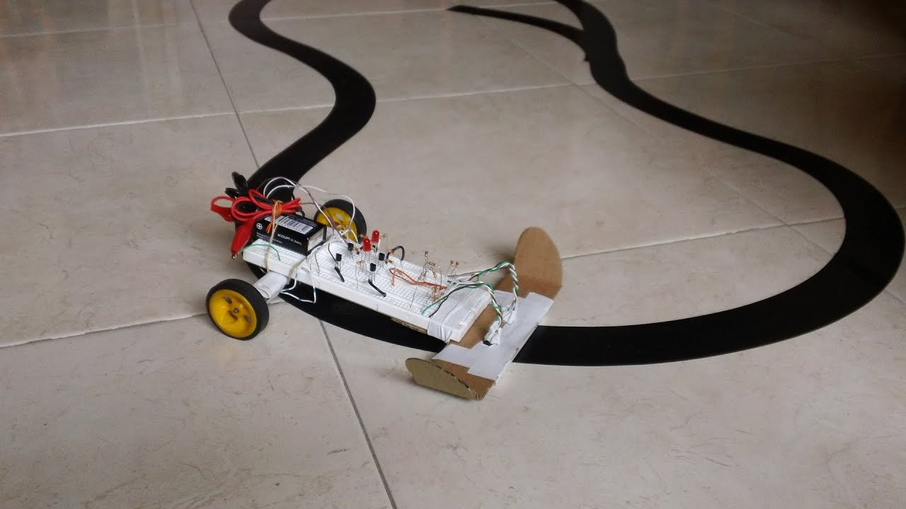
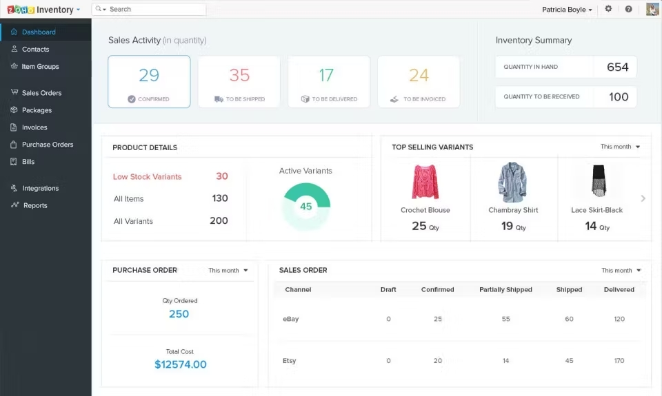

Sistema de riego automatizado
Controlador basado en Arduino que mide la humedad del suelo mediante sensores y activa mecanismo de riego cuando el cultivo lo necesita.
Muestra de proyectos de hardware, software e inteligencia artificial desarrollado por estudiantes de IX Semestre de Ingeniería de Sistemas.
Controlador basado en Arduino que mide la humedad del suelo mediante sensores y activa mecanismo de riego cuando el cultivo lo necesita.

Robot de dos ruedas que utiliza sensor infrarrojo para seguir una trayectoria trazada en el suelo.
Usa algoritmo para reducir las oscilaciones en curvas y mejorar la velocidad del recorrido.

Aplicación web para pequeñas empresas que permite manejar el control de stock, proveedores y órdenes de compra.
Cuenta con alertas para reabastecer stock y generación reportes.
Aplicación virtual de aprendizaje con cursos por módulos, seguimiento de progreso y evaluaciones.
Modelo entrenado que sugiere productos a partir del historial de compras y el comportamiento de los usuarios.
Red neuronal convolucional CNN entrenada para la detección de anomalías en radiografías de tórax.
El modelo se evaluó con una matriz de confusión revisada con personal médico.